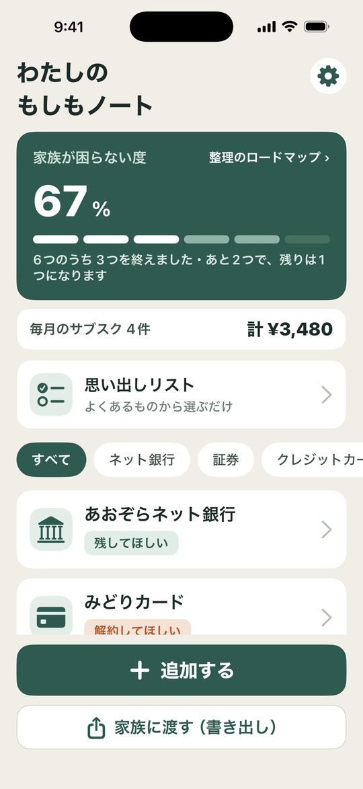
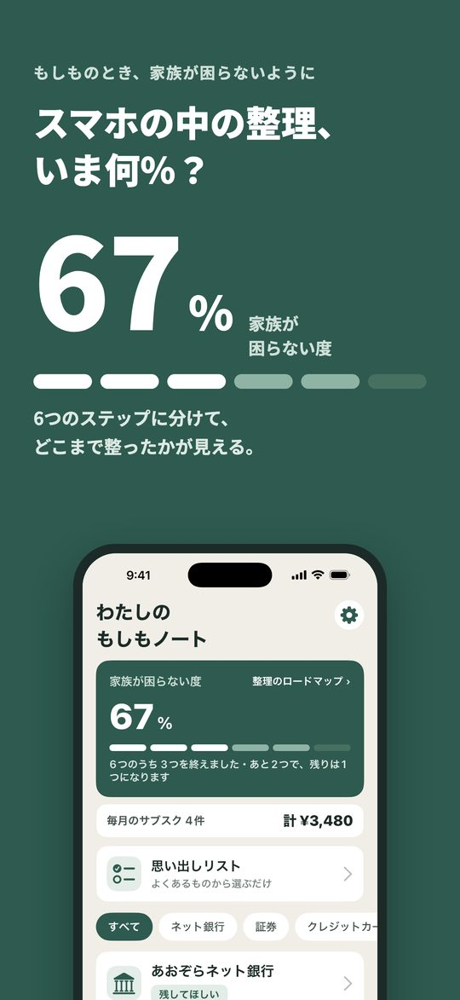
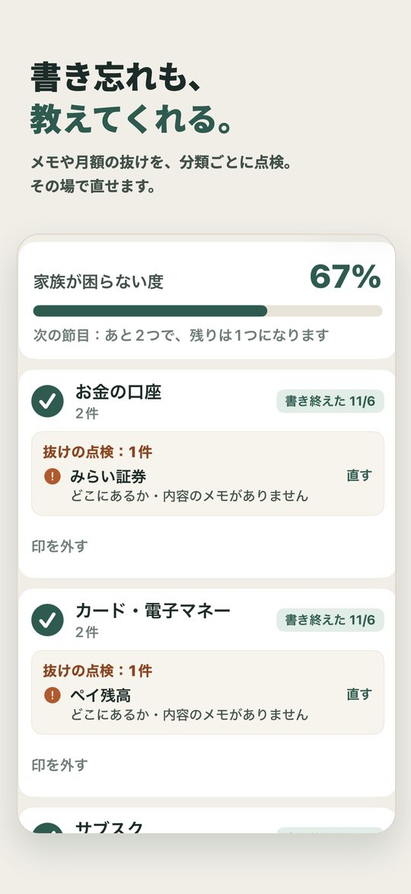
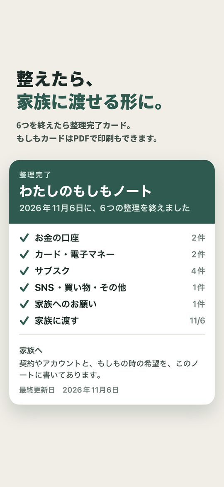
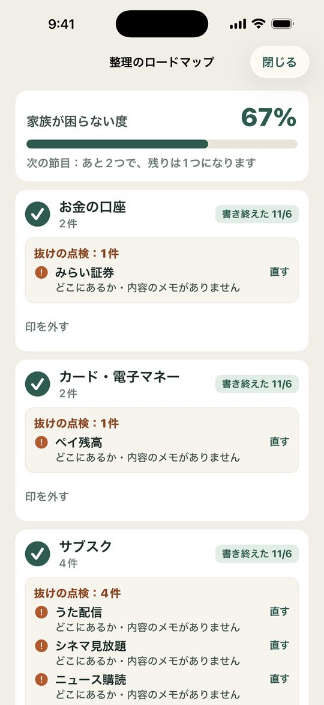
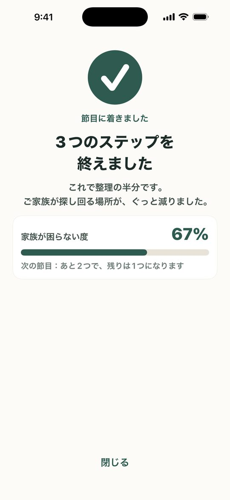
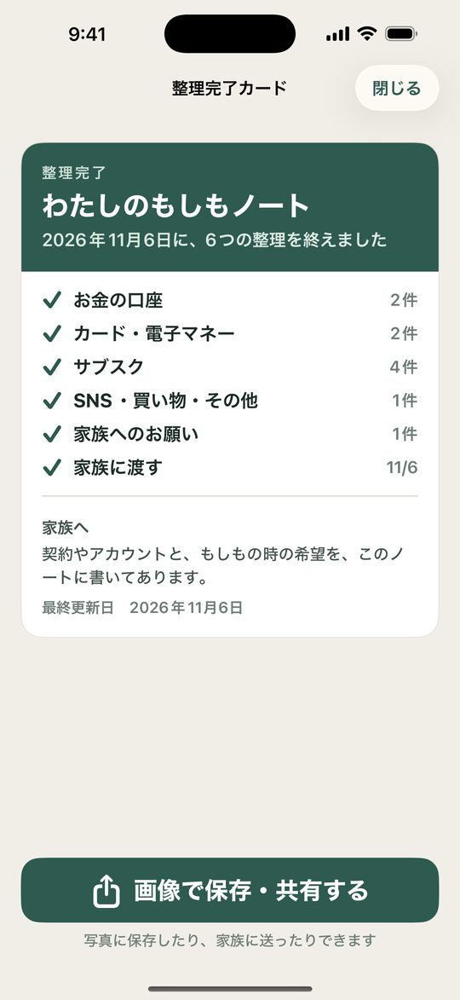
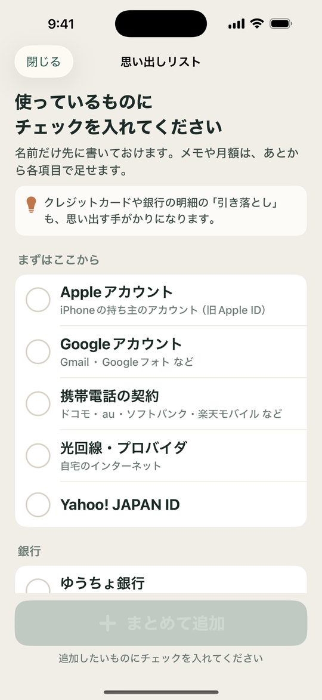
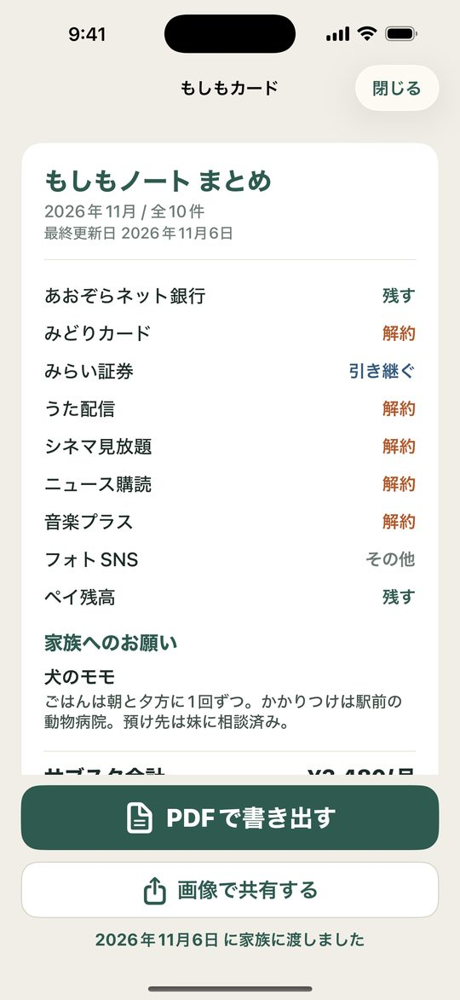

サブスク・アカウントを家族へ残す相続メモ
スマホの中のネット銀行・クレジットカード・サブスクを書いておくだけ。整理の進み具合が「家族が困らない度」でひと目でわかり、6つのステップで最後まで整えられます。件数の上限なく無料で書けて、情報は端末の中だけ。大きな文字で、どなたでもかんたんに。
App Store からダウンロード無料でダウンロード。追加機能は買い切り（¥800）で解放できます。

整理を6つのステップ（お金の口座／カード・電子マネー／サブスク／SNS・買い物・その他／家族へのお願い／家族に渡す）に分けて、どこまで進んだかを％で表示します。分類ごとに「書き終えた」「使っていない」の印を付けて、ひとつずつ進められます。節目に着くとお知らせします。
ネット銀行・証券・クレジットカード・サブスク・SNS・電子マネーなどを、種別を選んでかんたんに登録。どこにあるか・内容をメモできます。
「何を使っていたか思い出せない」ときは、よく使われる銀行・証券・クレジットカード・サブスク・電子マネーなどの一覧から、チェックを入れるだけでまとめて書いておけます。iPhoneで払っているサブスクの確認画面にもすぐ移れます。
ペットの世話、葬儀の希望、連絡してほしい人、保険・年金・ポイントの書類の在りか——口で伝えそびれがちなことを、自由なメモで書いておけます。もしもカードにも「家族へのお願い」の章として入ります。
「残してほしい」「家族に引き継ぐ」「解約してほしい」など、もしもの時の希望を一緒に残せます。
登録したサブスクの月額合計をまとめて表示。使っていない契約の見直しにも役立ちます。








もしもノートは、スマホの中の「契約・アカウント」を書いておき、もしもの時に家族が困らないようにするための、終活メモアプリです。
いま、お金や契約の多くがスマホやネットの中にあります。ネット銀行・証券、クレジットカード、動画や音楽のサブスク、SNS、電子マネー——本人しか知らないものばかり。もしもの時、家族は存在に気づけず、サブスクが払い続けられたり、カードの年会費が引き落とされ続けたり、口座が分からないままになりがちです。
もしもノートなら、それらを1か所に書いておくだけ。「もしもの時はどうしてほしいか（残してほしい／解約してほしい 等）」も添えられます。情報はこの端末の中だけに保存し、クラウドには上げません。
整理を6つのステップ（お金の口座／カード・電子マネー／サブスク／SNS・買い物・その他／家族へのお願い／家族に渡す）に分けて、どこまで進んだかを％で表示します。分類ごとに「書き終えた」「使っていない」の印を付けて、ひとつずつ進められます。節目に着くとお知らせします。
ネット銀行・証券・クレジットカード・サブスク・SNS・電子マネーなどを、種別を選んでかんたんに登録。どこにあるか・内容をメモできます。
「何を使っていたか思い出せない」ときは、よく使われる銀行・証券・クレジットカード・サブスク・電子マネーなどの一覧から、チェックを入れるだけでまとめて書いておけます。iPhoneで払っているサブスクの確認画面にもすぐ移れます。
ペットの世話、葬儀の希望、連絡してほしい人、保険・年金・ポイントの書類の在りか——口で伝えそびれがちなことを、自由なメモで書いておけます。もしもカードにも「家族へのお願い」の章として入ります。
「残してほしい」「家族に引き継ぐ」「解約してほしい」など、もしもの時の希望を一緒に残せます。
登録したサブスクの月額合計をまとめて表示。使っていない契約の見直しにも役立ちます。
パスワードで鍵をかけたバックアップファイルを作り、新しいiPhoneで開けば書いた内容を戻せます。戻すときは「今の内容に足す」か「置きかえる」かを選べます。鍵をかけずに書き出すことはできません。パスワードを忘れると誰にも戻せないので、大切に保管してください。
大きな文字・大きなボタン・少ない手順。文字サイズも3段階で選べます。
情報はすべてこの端末の中だけに保存され、アプリがクラウドに上げることはありません（バックアップファイルは暗号化され、保存先はご自身で選びます）。ログイン不要・アカウント登録不要。必要なら、起動時に Face ID／パスコードのロックもかけられます。
※ パスワードそのものは保存せず、ヒントだけを書く使い方をおすすめします。
書くこと自体は、件数の上限なくずっと無料です。買い切り¥800で、抜けの点検・整理完了カード・家族に渡せる書き出し（もしもカード）・年1回の見直しのお知らせが使えます。月額ではありません。
※ 本アプリは家族に残すためのメモであり、相続・終活や各種手続きに関する助言・案内は行いません。
無料でダウンロード。追加機能は買い切り（¥800）で解放できます。
お使いの iPhone の中にのみ保存されます。アカウント登録もログインも不要です。
iPhone（App Store から入手）。
メール suportapps44@gmail.com までご連絡ください。